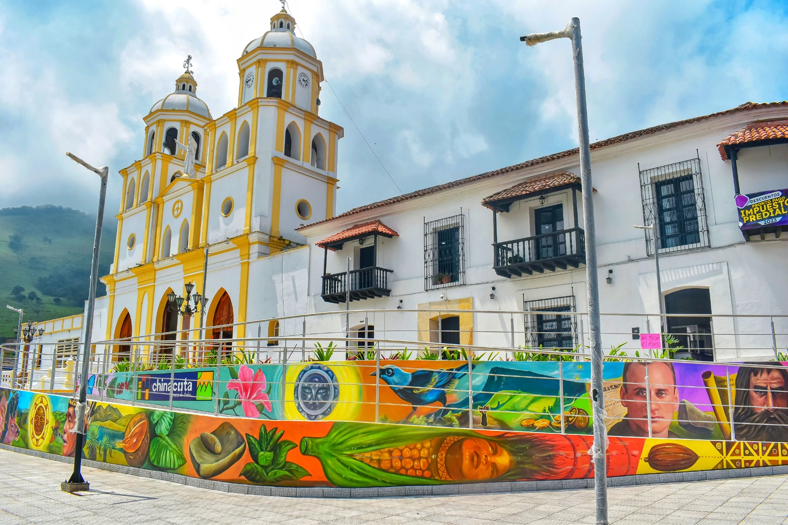

NORTE DE SANTANDER
REGION :ANDINA
PUNTOS TURISTICOS
La playa
Chinacota
La gabarra
ocaña
tibu_zonas
La Playa de Belén es un municipio en la subregión de occidente del departamento de Norte de Santander, Colombia.


Chinácota, conocido como 'la casita bonita del Norte de Santander.



La Gabarra es un corregimiento del municipio de Tibú, en el Departamento de Norte de Santander, Colombia.
Es el corregimiento más poblado de Departamento. Está situada en la denominada cuenca del Catatumbo a orillas del Río Catatumbo, limitando con la Serranía del Perijá en Venezuela.


Destaco este corregimiento por que soy de alli, puedes ir en canoa a diferentes playas, conocer el parque que cuenta con un monumento a las victimas.
Ocaña Es conocida como la ciudad de los Caro, ciudad que posee gran riqueza histórica, cultural y paisajística. Su naturaleza, su gente, su historia y el espectacular clima la hacen un sitio atractivo para visitar.


Tibú es un municipio de Colombia ubicado en el departamento de Norte de Santander, en el nordeste del país, en la frontera con Venezuela y a orillas del río que lleva su mismo nombre.